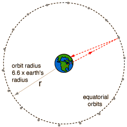

Syncom Satellites
Communication satellites are most valuable when they stay above the same point on the earth, in what are called "geostationary orbits". This occurs when the orbital period is 24 hours. From an orbit velocity calculation, it can be seen that a satellite at a radius 6.62 times the Earth's radius will have a period of 24 hours. These satellites are some 35,900 kilometers or about 22,300 miles above the Earth's surface.
|  | The minimum transit time to a syncom satellite and back from the surface of the Earth is about a quarter of a second. Any kind of electromagnetic wave travels at the speed of light. So in satellite-linked communication, there will be a minimum of a quarter of a second delay. |
|
Index
Gravity concepts |